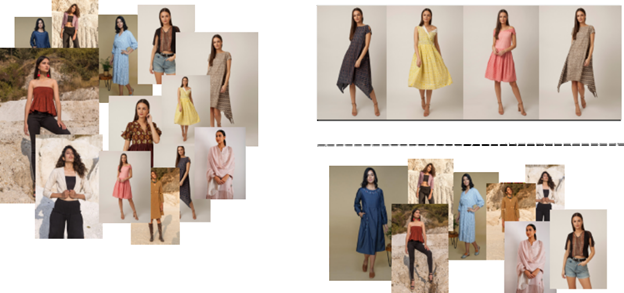
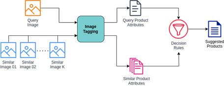
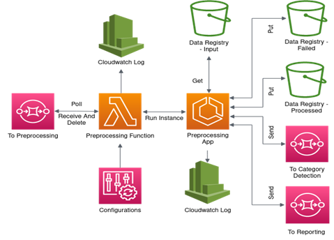
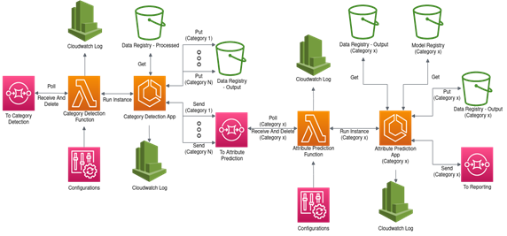
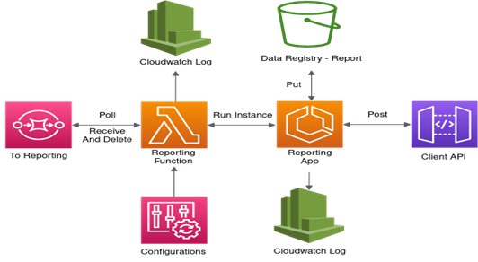
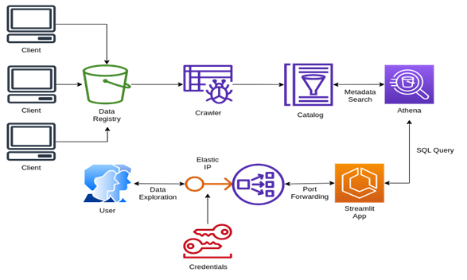

Attribute Specific Image Retrieval
Task
Given a catalog of images, and a query image, retrieve the images in the catalog whose attributes are similar to query image.
Client
A deep-tech start-up that assists fashion retailers to customise shopping experience by offering products like collections generation, inventory optimisation, and shopper persona mapping
Business Challenge
The attributes of an image in catalog can be auto-generated using Intelligent Tagging. These are used by the customer to filter results, and browse products.
However, when a customer selects a product, suggested items rendered on the product page, often lack similarity or don't have same attributes. For example : Rendering camaflouge socks, and olive green dress shirt when a customer is searching for camaflouge hoodie.
Lack of relevance in the suggested products, will hinder the user experience, and increase the add-to-cart duration. The objective is to identify similar images whose attributes match with the desired product, and render them as suggestion on the product page
Disruption Delivered
An ensemble of models to identify products that look similar to a query image, and business rules to shortlist based on matching attributes.

Solution Overview
Retrieving similar images
Using metric-learning, we finetuned an image encoder to minimize distance between similar images. The image encoder was used to generate image embeddings of the catalog, and embeddings were stored as a FAISS index for retrieval. The query image is embedded in the same space as catalog images, and based on a metric, k-nearest neighbours were selected from FAISS index. The corresponding images are returned as similar image.Tagging images
The similar images, and query images were tagged using Intelligent Tagging Using business rules, the images that shared maximal attribute overlap with query images were returned as the result.
Architecture Overview
User Interface Layer We developed a streamlit app for rapid prototyping. The UI layer helps us to trigger the pipeline by uploading a valid payload to the data registry.
Preprocessing Layer The images in the catalogue might not be valid, and downloadable. Additionally, they need to standardised for consumption by the inference layer. The preprocessing layers performs this task.

Inference Layer The inference layer identifies the categories from the pre-processed images. Based on the categories identified, the images are consumed by category specific multi-label classifier to generate the "attributes".


